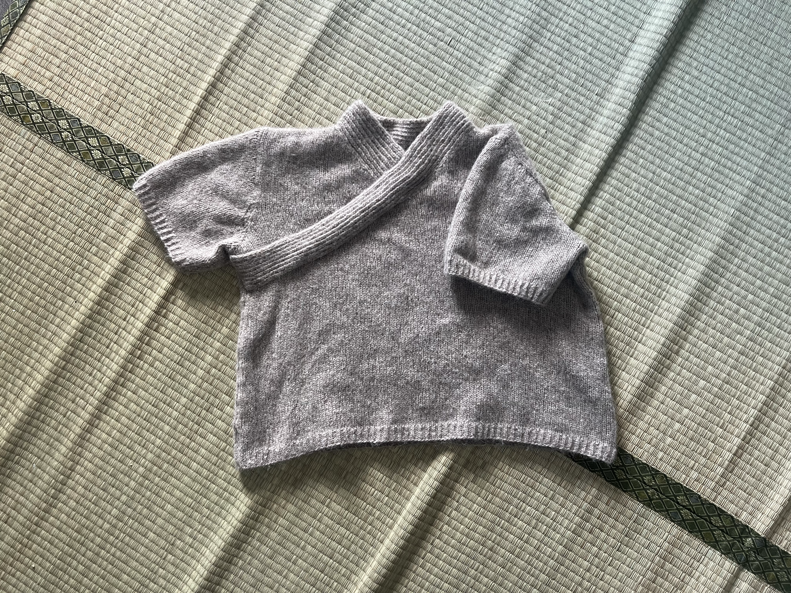
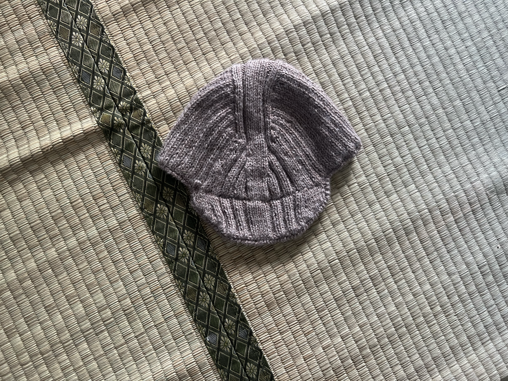

JUiST No2 by ANKESTRiCK
Yarn used: DROPS ParisStarted: July 1st
Finished: July 7th
Difficulty: 0/10
Amount of yarn used: 13 skeins
Started: July 1st
Finished: July 7th
Difficulty: 0/10
Amount of yarn used: 13 skeins

Started: July 8st
Finished: July 20th
Difficulty: 5/10
Amount of yarn used: 5 skeins

Started: July 27th
Finished: August 23rd
Difficulty: 7/10
Amount of yarn used: 17 skeins

Started: March 5th
Finished: June 17th
Difficulty: 5/10
Amount of yarn used: 7 skeins

Started: July 20th
Finished: July 23rd
Difficulty: 0/10
Amount of yarn used: less than 1 skein

Started: July 25th
Finished: July 28th
Difficulty: 8/10
Amount of yarn used: less than 1 skein